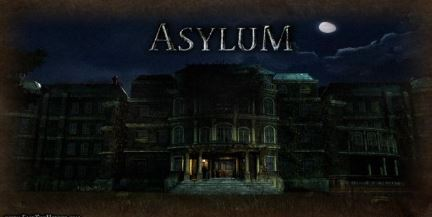
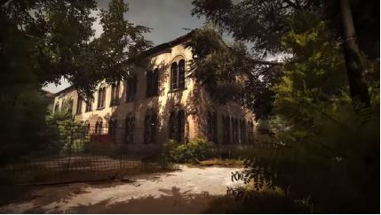

After a false-start in the 1980s, it's finally time for VR to shine. Facebook famously bought Oculus for 2 billion dollars in 2014, and now several major headsets are on the market (Oculus Rift, Sony's PlayStation VR, HTC Vive and more). Our motivation is the boom of this VR technology in the current era and how its storming the market leading us to a whole new world. Major game engines such as Unity and Unreal are now supporting VR, and the computer power required to drive VR is finally affordable. Today we have some great platforms to work with including Oculus Rift, Google Project Cardboard, and Samsung Gear VR.
Our Survival game is based on VR with using VR properties and Bluetooth mobile controller. The main character will have to find his way out of the asylum where he was put in for a survival test. There will be different levels with each one being disocult than the previous one story will be in continuity. It will be playable for least android lollipop and IOS 10.0 Game will be completed Player will be set up.
Our game is a VR game and our idea is to give player a real experience of surviving the asylum where our main character is asked to enter a asylum if he want to get some money for the operation of his daughter. The feature in this game will be developed from scratch graphics, astonishing sound evtects and a little bit of horror theme would be added in our game. Start with the most signiffcant feature.
SURVIVAL VR is a science fiction survival horror video game developing for the Final Year Project on Android and IPhone OS. Survival takes place in asylum where a poison gas has killed all the people inside created by the doctor and scientist in the asylum as the asylum hold the mad people the government didn't do much about the scientist continuously run test for how long a human can survive the gas, in that so our main player (father) find himself being a lab rat as he want money to save his daughter.
Survival's gameplay builds on an emphasis on stealthy evasion of threats, puzzle-solving and immersion. However, in a break with this tradition, it also deemphasizes aspects such as inventory management in favor of a tighter focus on narrative.
Survival game play sets on the asylum that is closed from many years due to accident which was set up by the scientist and doctor's .the asylum is haunted and main player (father) has to survive it.
The Player is asked to survive the asylum that is closed for many years .The Player need money to pay for his daughter's operation. He was approached by the few scientist, doctor and the Army man for the surviving test and made him sign the contract that if he die during the test no money will be transferred so he has to survive. 
After accepting the over the main character make way into the Asylum Where he go through the dark forest to go into the very old Building called the Asylum before the doctor inject some chemical into his body by that he feels a little dizzy, heavy breathing,can't walk straight 
After making into the Asylum he's only object was to find the roof top and exit it the building is old so no modern technology is inside the asylum all the keys and generate are outdate(not much but a little).
He walk floor by floor and started seeing something, hear laugh gossip. Breath Getting heavier feel like he is dying from inside
On the floor he start are a girl along on his way he got scare and try to run behind and exist from the main gate but suddenly a fire started in a main hall and leaving no choice but to move forward he have to go to the on roof so have to climb all the floor by stairs.
A lot of stair cases were close and light is off where the ghost girls help him finding the thing he need In order to move forward He doesn't believe in her so she show a little glimpse of the past so he can find the thing or know how things were.
Girl show the history to the man where he change character to play as a little girl so he can find what happen to the place.
The asylum was full of mad people and government didn't care about them so the doctor secretly make a poison gas as an experiment which kill all the people present in the building including the doctor. Which make them ghost and no one can enter in the building, the gas in slowly killing the main player. If he don't leave the building he will also turn into the ghost. He have to leave in order to pay for his daughter. The girl also told that a lot of people have enter in the asylum and all of them were killed.
Our Survival game is based on VR with using VR properties and Bluetooth mobile controller. The main character will have to find his way out of the asylum where he was put in for a survival test. There will be different levels with each one being difficult than the previous one story will be in continuity.
Survival VR is a survival horror video game played from a first-person perspective. The player will encounter a number of creatures, which will each embody an aspect of the game’s themes. Survival primarily utilizes elements of psychological horror instead of conventional scares found in most video games within the genre. Throughout the game, the player will find a large array of clues, such as notes and audio tapes, which builds atmosphere and furthers the plot. Similar to most titles by Frictional Games, there is no combat, and instead the player progresses through puzzle-solving, exploration and the use of stealth.